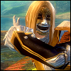
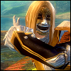

dinny

Story
Born as an only child to Priory librarian Proxx and explorer Milli in the town of Soren Draa, Dinny was intimately involved with Priory activities from a young age and frequently traveled between Metrica Province and the monastery. Both graduates of the college of Statics, her parents harbor an intense reverence for the asuran civilizations of old, desiring to reclaim as much lost knowledge as possible. A large body of their research concerned the whereabouts of the old underground cities and, prior to Dinny's birth, the couple made several efforts at an expedition to find a safe route into Quora Sum. They were thwarted by destroyers on every attempt. Their particular avenues of research meant that Dinny's house was littered with ancient asuran artifacts and manuscripts. She also received training in reading ancient asuran text, but is not fluent. Although Dinny no longer lives with her parents her relationship with them remains amicable.
In her adult life Dinny was accepted into the College of Statics, following in the footsteps of her progenitors. She joined the Peacemaker force immediately after graduation, reasoning it was the 'easiest' option. She is most known for her work on peacemaker weaponry at the Mrot Boru facility, having discovered new enchantment alignments that could be applied to previous weapon designs to mitigate required output, allowing melee weapons to be used effectively in the absence of raw physical strength. A rumor also persists that she designed a prototype for an 'escort' golem.
In her adult life Dinny was accepted into the College of Statics, following in the footsteps of her progenitors. She joined the Peacemaker force immediately after graduation, reasoning it was the 'easiest' option. She is most known for her work on peacemaker weaponry at the Mrot Boru facility, having discovered new enchantment alignments that could be applied to previous weapon designs to mitigate required output, allowing melee weapons to be used effectively in the absence of raw physical strength. A rumor also persists that she designed a prototype for an 'escort' golem.
Personality
Those who know Dinny would be quick to describe her as a affectionate, warm personality. Those who know her better would advise you watch your back. A cute face and friendly demeanor conceal a personality that is, in reality, somewhat bitchy. Dinny possesses a mean-spirited streak and enjoys observing (and sometimes causing) drama in the personal lives of others.
At her worst Dinny is puerile, indecisive, simplistic and lazy. As the only child to two very doting parents she still sometimes carries a "princess-like" attitude, becoming infuriated and petulant when things don't go her way. Fortunately for her and those around her, they usually do.
At her worst Dinny is puerile, indecisive, simplistic and lazy. As the only child to two very doting parents she still sometimes carries a "princess-like" attitude, becoming infuriated and petulant when things don't go her way. Fortunately for her and those around her, they usually do.
Appearance
A female asura of average height with cream-colored skin (no markings), pink eyes and long ears. Straight dark brown hair frames her pointed face. Her silhouette is pear-shaped with a narrow, flat chest and wide-set hips. She also possesses a single piercing at the tip of her left ear, although she does not wear an earring in it whilst in armor or in uniform. For casual clothes, she prefers dresses.
| Race | Asura | Birthdate | 7th Scion, 1304AE |
|---|---|---|---|
| Profession | Peacemaker Officer | Skills | Gardening, cooking, healing magic, ooze communication | Fav Color | Pink | Fav Food | Ooze Booze |
| Likes | Fishing Flowers Oozes |
Dislikes | The Inquest Snow Work |
| Strengths | Approachable and friendly. Loyal to her inner circle. Allies with and listens to members of other races (i.e. not an asura supremacist). Intelligent (by most standards). | Weaknesses | Two-faced. A gossip who enjoys sowing and spectating drama, but has no tolerance for being the subject of the same. Dim-witted (by asuran standards). |
Bonds
Rhisiart Santee (Spouse): A human merchant. The pair met in Caledon after Dinny strayed wildly off her patrol route. They would arrange to meet in secret. Dinny saw in him an opportunity to satiate her desire to experience lands beyond Maguuma and Rhisiart obliged by including her in several of his questionable business ventures. They were married in winter of 1326AE.
Annachponae: A childhood friend who Dinny met in Lion's Arch and eventually encouraged to move to Rata Sum as an adult. The two have an incredibly close brother-sister type relationshp, often knowing exactly what the other is thinking and feeling. Even after their paths diverged and they write to each other often.
Vanli: A wild and power-hungry asura who Dinny met during her partying years and who often joins her more dangerous escapades. The pair bicker and banter constantly and seem closer for it. She tends to encourage and emphasize Dinny's worst traits, and seems to have usurped Miyppa as Dinny's female best friend during and post-college.
Miyppa: A childhood friend, Statics classmate and a relative of the renowned Magister Tassi. During their college years a rift grew between them as Dinny neglected her friends and studies in favor of the wild rave parties held deep in the lower levels of Rata Sum. It seems they might've been closer when they were younger. In recent years, they have reconciled somewhat.
Dustin Limbo: An unusual human mesmer with the Durmand Priory, rumored to have crossed the Mists from another time. Steward Gixx originally tasked Dinny with "keeping an eye on him", but that duty has long lapsed. Dustin seems drawn to her as she coincidentally shares the same name as his deceased lover, the sunspear Dinny Dimante.
Rikki: A drop-out who attended a few early classes before deciding to forgo traditional asuran college education in favor of pursuing independent study. Specializes in pheromones, worked on the infamous "Asuralations". Dinny likes to pretend she doesn't know who she is, even though she was a regular customer.
Professor Gorr: A celebrity scientist in Rata Sum. He was Annachponae's personal mentor throughout his unfinished Synergetics degree, and later his ally in the Order of Whispers. Dinny would take every opportunity to cross his path and establish rapport with him. When she realized she could never be with him, she cut off her hair.
Annachponae: A childhood friend who Dinny met in Lion's Arch and eventually encouraged to move to Rata Sum as an adult. The two have an incredibly close brother-sister type relationshp, often knowing exactly what the other is thinking and feeling. Even after their paths diverged and they write to each other often.
Vanli: A wild and power-hungry asura who Dinny met during her partying years and who often joins her more dangerous escapades. The pair bicker and banter constantly and seem closer for it. She tends to encourage and emphasize Dinny's worst traits, and seems to have usurped Miyppa as Dinny's female best friend during and post-college.
Miyppa: A childhood friend, Statics classmate and a relative of the renowned Magister Tassi. During their college years a rift grew between them as Dinny neglected her friends and studies in favor of the wild rave parties held deep in the lower levels of Rata Sum. It seems they might've been closer when they were younger. In recent years, they have reconciled somewhat.
Dustin Limbo: An unusual human mesmer with the Durmand Priory, rumored to have crossed the Mists from another time. Steward Gixx originally tasked Dinny with "keeping an eye on him", but that duty has long lapsed. Dustin seems drawn to her as she coincidentally shares the same name as his deceased lover, the sunspear Dinny Dimante.
Rikki: A drop-out who attended a few early classes before deciding to forgo traditional asuran college education in favor of pursuing independent study. Specializes in pheromones, worked on the infamous "Asuralations". Dinny likes to pretend she doesn't know who she is, even though she was a regular customer.
Professor Gorr: A celebrity scientist in Rata Sum. He was Annachponae's personal mentor throughout his unfinished Synergetics degree, and later his ally in the Order of Whispers. Dinny would take every opportunity to cross his path and establish rapport with him. When she realized she could never be with him, she cut off her hair.
Miscellaneous Facts
❤︎ Series/setting: Guild Wars 2
❤︎ Has a number of pets, most notably an ooze named Mercoozio. Sometimes Mercoozio follows behind her, at other times it lives in a glass jar carried around in her pack - it doesn't seem to mind as long as it's fed regularly.
❤︎ Has some trouble reading and writing New Krytan and prefers asuran script wherever possible.
❤︎ When dealing with non-asura she has a tendency to stand on objects (steps, tables, countertops etc) to elevate herself to the height of those around her.
❤︎ Despite spending a good portion of her childhood at the Priory, she does not tolerate cold and snowy environments well, preferring the scathing tropical heat of her home in the Maguuma Jungle.
❤︎ Though she shares my name, she's her own character, not a self-insert. I claimed the name "Dinny" on her at launch just because my name happened to align with valid asura naming conventions and I didn't expect to end up playing her so much - my "main" at the very start was actually a male human engineer!
❤︎ As a character in a currently ongoing MMO, she has no fixed age/status. She ages every real-world year and her life circumstances are ever-changing.
❤︎ Has a number of pets, most notably an ooze named Mercoozio. Sometimes Mercoozio follows behind her, at other times it lives in a glass jar carried around in her pack - it doesn't seem to mind as long as it's fed regularly.
❤︎ Has some trouble reading and writing New Krytan and prefers asuran script wherever possible.
❤︎ When dealing with non-asura she has a tendency to stand on objects (steps, tables, countertops etc) to elevate herself to the height of those around her.
❤︎ Despite spending a good portion of her childhood at the Priory, she does not tolerate cold and snowy environments well, preferring the scathing tropical heat of her home in the Maguuma Jungle.
❤︎ Though she shares my name, she's her own character, not a self-insert. I claimed the name "Dinny" on her at launch just because my name happened to align with valid asura naming conventions and I didn't expect to end up playing her so much - my "main" at the very start was actually a male human engineer!
❤︎ As a character in a currently ongoing MMO, she has no fixed age/status. She ages every real-world year and her life circumstances are ever-changing.